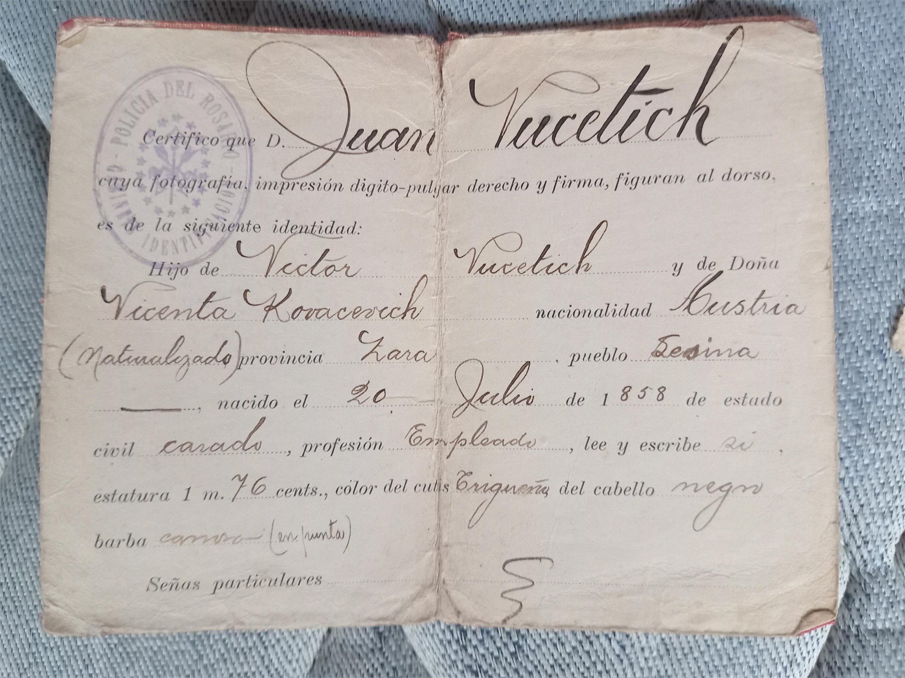
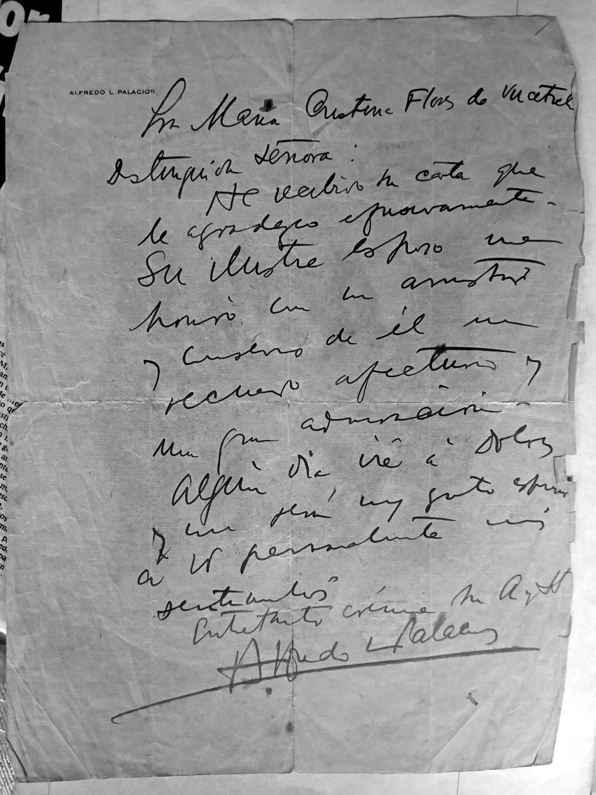

Documentos · fotografías · memoria
Archivo Juan Vucetich
Un recorrido por la vida, la obra y el legado del creador del sistema dactiloscópico argentino a través de materiales conservados por su familia.
Explorar el archivoEl origen del proyecto
Una historia preservada en familia
Este archivo reúne fotografías, cartas, documentos y objetos vinculados con Juan Vucetich. El conjunto permite acercarse tanto a su aporte científico como a los aspectos personales de su historia.
El sitio organiza ese legado en nueve recorridos: desde sus orígenes en Hvar y su trayectoria en la Argentina hasta las distinciones recibidas y los lugares que hoy conservan su memoria.
Recorrer el archivo
Nueve miradas sobre una misma vida
Cada página reúne un aspecto diferente de la historia de Juan Vucetich.
Contexto general
Historia y trayectoria
De Hvar a La Plata y de las primeras fichas a la expansión internacional de la dactiloscopía.

Álbum familiar
Vida personal
Retratos, vínculos y escenas de la vida cotidiana.

Identificación
Cédula de identidad
El creador del sistema identificado por su propia huella.

La palabra escrita
Cartas y comunicaciones
Manuscritos, telegramas y correspondencia conservada.

Distinción
Medalla
Una condecoración y el artículo que registró su historia.

Objetos conservados
La vitrina
Piezas personales, porcelanas, insignias y recuerdos.

Proyección internacional
Reconocimientos
Diplomas, invitaciones y testimonios institucionales.

La Plata
Lugares de memoria
El sepulcro, los monumentos, el museo y la escuela.

Hvar · Croacia
La casa natal
El lugar de origen, la placa y sus pertenencias.